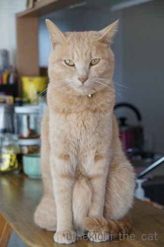
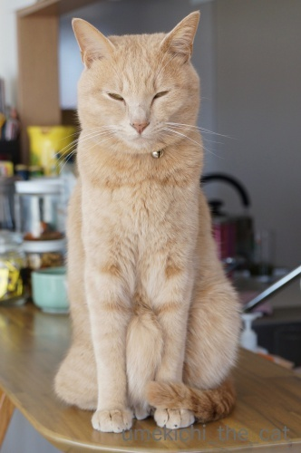
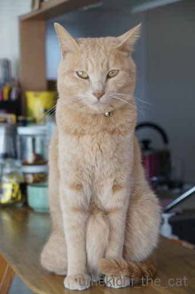
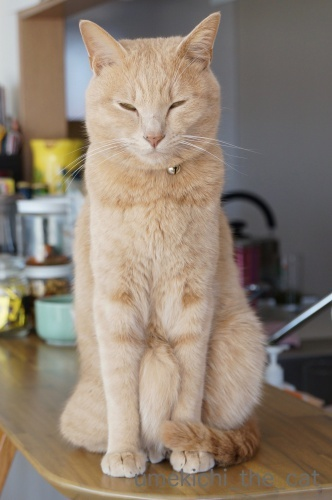

ピントが合っているのは・・・ [梅吉]
今にも寝落ちしそうになっていたのにカメラを向けると

![[猫]](https://blog.ss-blog.jp/_images_e/101.gif) きりっ
きりっ![[ぴかぴか（新しい）]](https://blog.ss-blog.jp/_images_e/150.gif)
わし、ねてへんで
背筋を伸ばして顔を作る梅吉さん。
でもー、撮りたいのは凛々しいお顔ではなくて

手と手に挟まれたモリッとした太もも（梅吉サンド）なんですよね＾＾
（寝落ちの顔も撮りたかったんですが・・・）

ピントもバッチリ「梅吉サンド」に合ってます。

サンドの間に手を入れても良いですかー！
 ↑ガブッと一押し↑
↑ガブッと一押し↑
こちらのキリッとしたお顔は・・・
わし、わるいことなんてかんがえてへんで
せかいいち ただしいねこやからな
と主張しているところです。
梅吉につまみ食いされないようオーブンレンジの中に避難している
ハムサラダを狙ってなんていないそうですw

わし、ねてへんで
背筋を伸ばして顔を作る梅吉さん。
でもー、撮りたいのは凛々しいお顔ではなくて

手と手に挟まれたモリッとした太もも（梅吉サンド）なんですよね＾＾
（寝落ちの顔も撮りたかったんですが・・・）

ピントもバッチリ「梅吉サンド」に合ってます。

サンドの間に手を入れても良いですかー！
こちらのキリッとしたお顔は・・・
せかいいち ただしいねこやからな
と主張しているところです。
梅吉につまみ食いされないようオーブンレンジの中に避難している
ハムサラダを狙ってなんていないそうですw
2018-01-26 15:29
nice!(57)
コメント(23)

カフェオレ色の梅吉

梅吉 2023年8月10日 永眠


梅吉と出会った譲渡会

犬猫の理由なき殺処分ゼロ
妄想広告
UMEKICHI 光

爆発的に早い！
時々攻撃的！
Thanks to Mr.Boss365
爆発的に早い！
時々攻撃的！
Thanks to Mr.Boss365

先生、我慢してますね〜〜
伝わってきました？^ ^
by KENT0mg (2018-01-26 16:47)
つまり腰をひねって座っているのですかね。珍しい座り方です。しかもこの体制で寝るんですね。
うちも冷蔵庫で冷やしたくはない食べ物だと、レンジとかに入れておきます。でもそのまま忘れちゃうことがあるんです。
by zombiekong (2018-01-26 17:53)
キリッとしたお顔できちんとおすわりの梅吉さん、さすが＾＾
‥きちんとおすわりじゃない？不思議な角度に～
これ、よくやるってことですか～うちのがやっているのを見た覚えありません＾＾；
レンジの中に美味しいものを入れておくと、その下で「忘れてるでしょ！ここにあるよ～」と、開けるまで鳴く子もいました＾＾；
by sana (2018-01-26 17:56)
梅吉サンド！！！
もふっとしたところをツンツンしたくなりますね(#^.^#)
触り心地抜群そうです♪
by きぃ (2018-01-26 20:06)
梅吉さんは前足の間に出来た梅吉サンドですね！
うとうととしたときに触るの良いですね(^^)
by ma2ma2 (2018-01-26 21:15)
梅吉さんには尻尾が二本あるのかと思いました。
太ももなんですね。
そういうことが猫はできるんですね。
今度、ユキで実験してみます(^^)
by riverwalk (2018-01-26 21:27)
あぁ、梅吉サンドに顔を埋めて思う存分モフりたいです（≧∇≦）
うちは大御所がへそ天で寝てる時にかみさんが風呂に入ってる時は
モフれますが、その後を盛大にグルーミングしまくって毛が濡れた挙句
かみさんに告げ口されて怒られます(*_*)
かみさんの場合は、通りかかりに撫でないと文句言うくせに(ｰ ｰ;)
ニャンコって悪いこと考えてる時ほど、キリッとした良い顔しますよねぇw
by ニッキー (2018-01-26 21:40)
梅吉さんサンド、暖かそう♪ ^^)
by yes_hama (2018-01-26 22:29)
あ！太ももだったんですね(≧▽≦)
尻尾とは違うし…あれ？って＾＾
オバちゃんもサンドに手を入れさせてくださーい( ´∀｀ )
by マーヤ (2018-01-26 22:40)
梅吉サンド、こちらにも追加お願いしまーす！
安定の姿勢なのでしょうかね。
・・・すみません、実は一瞬、お腹のはみ肉かと思いました・・・(｡-_-｡)
by Ja-Kou66 (2018-01-27 01:08)
お腹のお肉じゃなかったんですね＾＾；
我が家にはお腹の肉を挟めそうな子がいます（爆）
by ぽちの輔 (2018-01-27 07:08)
太もも（梅吉サンド）、ドナイナッテンネン？
足がドナイナッテンネン？
普通はドナイナッテだぁ？
梅吉さんの、正しいお座りですね〜（笑）
by kiki (2018-01-27 08:02)
ええっ?! サンドされているのは、太ももの筋肉なのですか〜
ウチの子なら、ここは、お腹のたぷたぷよ。。(^_^;
by のらん (2018-01-27 08:19)
梅吉サンド！１枚目の写真を見た瞬間、その存在に気付いたよ～っ(≧▽≦)
これは我慢できない～！！
そこにサンドされてぬくぬく希望ですｗ
せかいいちただしいねこ・・・もちろんハムサラダなんて狙っていないでしょう。
守っているのでしょうｗ
by emi (2018-01-27 17:39)
はさめる太もも！梅吉君、いいもの持ってるね！(挟んでるね！
プラス寝落ちのオチまでつけて、なんて子！
by BillK-ko (2018-01-27 18:10)
寝落ち寸前の威厳・・・エジプトでクレオパトラ様のプライベートを観ていた気がする！
by Ginger (2018-01-27 18:13)
我が家でも、危険な気配を感じたら取り合えず食材は電子レンジか冷蔵庫に放り込む、が最も有効な防御策です(^▽^;)
梅吉さん、その鋭い眼差しは狙ってますね、ハムを！！
あ～サンドに指突っ込みたい♪
by ゆきち (2018-01-27 21:12)
KENT0mgさん＞
何故かねむいのを我慢するんですよねー。
だれも止めないんだからちゃっちゃと寝れば良いのに・・・
まぁ、その我慢している姿も可愛いのですが＾＾
zombiekongさん＞
ちょっと腰をひねっています・・・でしょうか。
しょっちゅうやっているので「珍しい」とは思っていませんでしたー。
今度どんな座り方になっているのかじっくり見てみますね＾＾
レンジに入れっぱなし、あるあるです(^▽^;)
魚焼きグリル、食洗機を開けて「おうぅ！」と思うこともwww
sanaさん＞
梅吉はしょっちゅうこのおすわりをするので
あまり気にしていなかったのですが・・・
みなさんの指摘を受けてなるほど！ちょっと角度が気になりますね！！
今度この座り方をしたらどうなっているのかじっくりみておきます＾＾
おお！リマインダー機能のにゃんこ！！
梅吉は教えてくれませんが取り出した後も
「きっとここにあるはずや・・・」といつまでも粘っています(^▽^;)
きぃさん＞
毛のもふっとした感じと筋肉のモリッとした感触が
癖になる手触りですよー＾＾
ツンツンどころがわしわし触っちゃいます！
ma2ma2さん＞
うとうとしていても一瞬で目がぱちーっとなって
ガブっと来るので油断できません(^▽^;)
riverwalkさん＞
よくよく見たら不思議な体勢ですよねー＾＾
ユキちゃんだとゴージャスな毛皮が入り乱れて
尻尾が八本くらいに見えちゃうかもー！
ニッキーさん＞
梅吉は構われるのが大好きなので多分逃げない・・・
ただ、モフのお返しにプロレスの相手をさせられる可能性大でーす＾＾
手に赤い線をたくさんつけてみませんかw
キッチンにいる梅吉はいつも凛々しい・・・
そう！悪いことしか考えてないんですよー！！
yes_hamaさん＞
ぬくいですよー＾＾
でも触るとガブっとくるので痛いですよー＾＾
マーヤさん＞
手を入れたら太ももの弾力と毛皮のモフ具合
両方を堪能できますよー＾＾
手を入れた証明証として梅吉が「赤い線」の
スタンプを付けて差し上げます！
Ja-Kou66さん＞
追加注文、ありがとうございまーす＾＾
不思議な姿勢ではありますが
本にゃんはきわめて自然にこのポーズになるので
楽なのでしょうね。
腹はみ肉もいいですねぇ・・・
梅吉ダイエット大成功ゆえはみ肉が作れませんw
残念そして羨ましい・・・(〃ω〃)
ぽちの輔さん＞
梅吉はスリムなのではみ肉は出来ません。が
私がイケそうですwww
kikiさん＞
サンドの間に手を入れたい！との欲求に目が眩んで
梅吉のお座りポーズがドナイナッテるかちゃんと見てませんでしたー(^▽^;)
今度つぶさに観察しますねー＾＾
変な格好ですが梅吉には楽な姿勢のようですよ。
寝ちゃうくらいですからwww
のらんさん＞
ダイエット後お腹はシュッとしたままでーす＾＾
太ももは日々お家の中を爆走するトレーニングで鍛えているので
なかなかの発達具合なんですよ。
モリッとして触り心地もグッドでーす。
たぷたぷも捨てがたいですが・・・www
emiさん＞
おお、目が釘付けになりましたか＾＾
私も最初見たときは「それはなにー！？」と大注目、の後
手で撫でまくりでしたよ。
ハム、守ってくれてたんだ・・・
ていーっと手が伸びてきたのは見えない敵から
守ってくれていたのねー！！
BillK-koさん＞
白目で終了したかったのですがそれはかないませんでしたー。
でも落ちを忘れない梅吉、恐ろしい子・・・（私が白目）
Gingerさん＞
まぁ(〃▽〃)梅吉そんなに神々しく神秘的だったでしょうか＾＾
ゆきちさん＞
我が家は食洗機と魚焼きグリルも避難場所です。
いざ、使おうとすると色々取り出さなきゃならなくて・・・
使いにくい台所への道を驀進中ですwww
サンド、指なんて言わずに手も顔もいかがですか？
こてつくんで鍛えてらっしゃるから
ガブっとされる前に逃げるのがお上手そうです＾＾
by ちぃ (2018-01-28 13:35)
やった～梅吉サンドだ!!思ってたより具が肉厚です！
梅吉くん眠かったら寝ていいんだよ～(^.^)
うちもとりあえず電子レンジ保管です(-"-)
by palpal (2018-01-28 20:43)
画像を拝見していたら、梅吉さんとにらめっこ
している気分に・・見つめ合い～（＾＾V）
お尻尾のクルンとした巻き具合もキュートです！
by うりくま (2018-01-28 22:02)
梅吉サンド〜〜〜！
これはサイコー^^
あー、もにもにしたい。つまんでみたい(笑)
柔らかいだろうなあーーー
by リュカ (2018-01-29 00:30)
なかなか立派なサンド！
この筋肉があれば、オリンピック短距離でメダルを狙えそうです。（＾_＾）
by よーちゃん (2018-01-29 06:58)
palpalさん＞
日々家の中を走り回る訓練を積んでいるので
お肉の締り具合もバッチリ！
噛みごたえ、噛まれごたえ？も十分ですよー＾＾
我が家はその他食洗機、ガスレンジグリルも避難場所でーす。
ガスレンジグリルは入れたの忘れちゃう場所ナンバーワンwww
うりくまさん＞
あらら、私に内緒で梅吉とそんなことしてたんですねー。
見つめあってお目目を「しばーっ」とされたら
「I love You」のサインです＾＾
最後の写真が「しばーっ」かも！！
好かれちゃったら次はガブられることにチャレンジしてみましょうwww
リュカさん＞
日々家の中を走り回る、プロレスなど怠りなくトレーニングしているので
結構硬く締まってます！
それがまたいい感じなのよー＾＾
もにもにしているのはお股の間。
股間のチョップで楽しめる手触りですわよwww
よーちゃん＞そうそう！
にゃんこはスプリンターって感じですよね＾＾
2020 TOKYO ネコリンピック目指してます！！！
by ちぃ (2018-01-29 11:01)